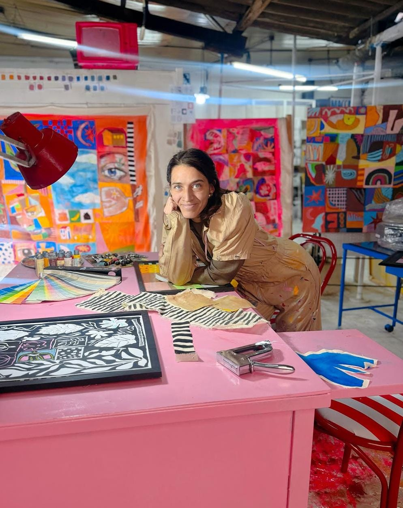

Vico Destefano
Es una artista visual, creadora de objetos, ilustradora y muralista asentada en Rosario. Su práctica artística se enfoca en la creación de micromundos, objetos intervenidos, el muralismo y la pintura figurativa contemporánea.
Mantiene un enfoque lúdico y detallista en el que lo cotidiano se transforma mediante composiciones fantásticas y narrativas visuales de escala muy variada.
Instagram
Técnicas
- Muralismo
- Acrílico / Oleo sobre tela
- Dibujo
- Cerámica